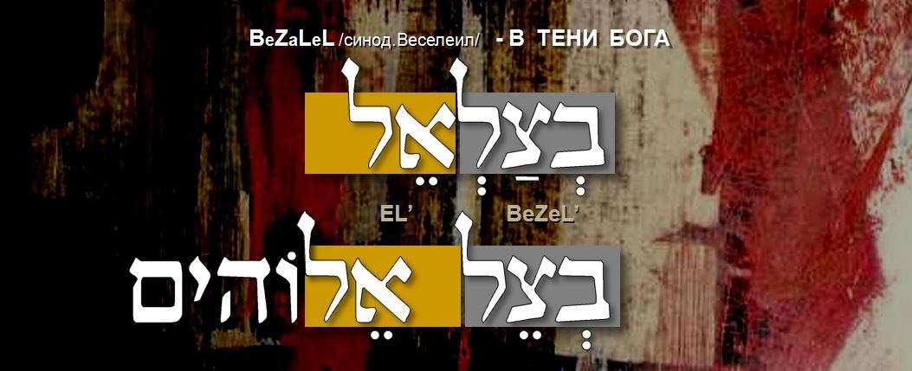
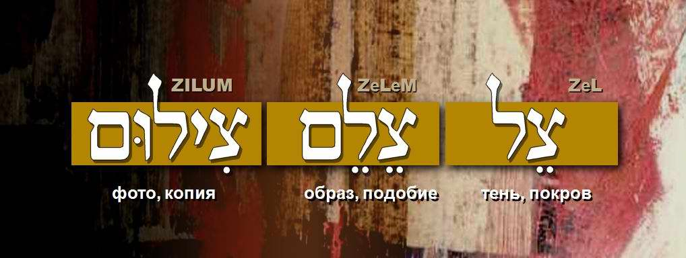
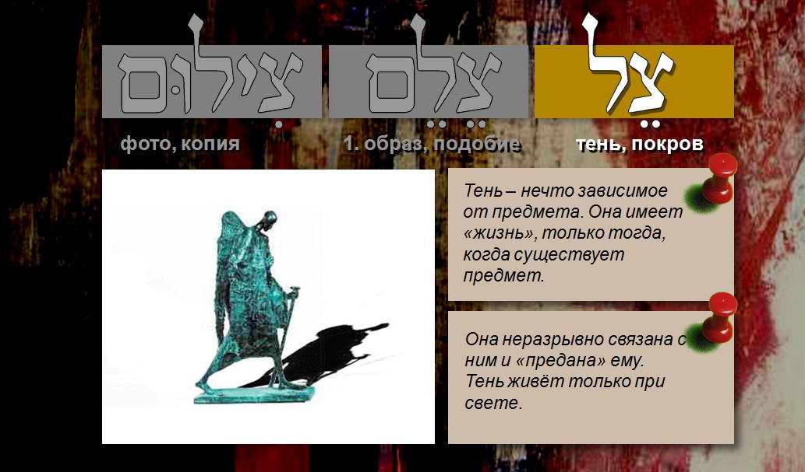
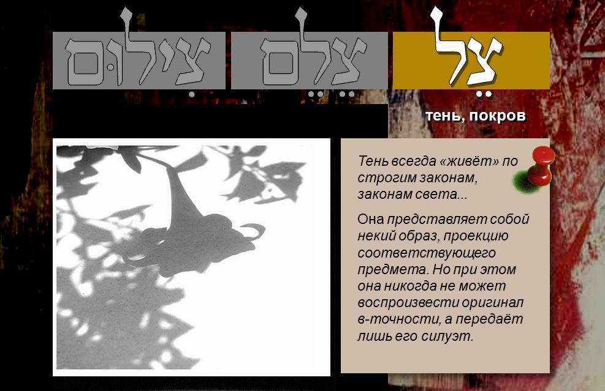
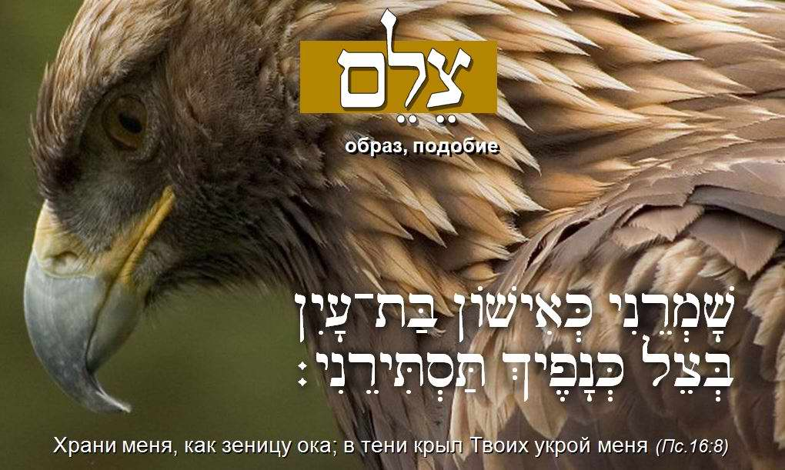
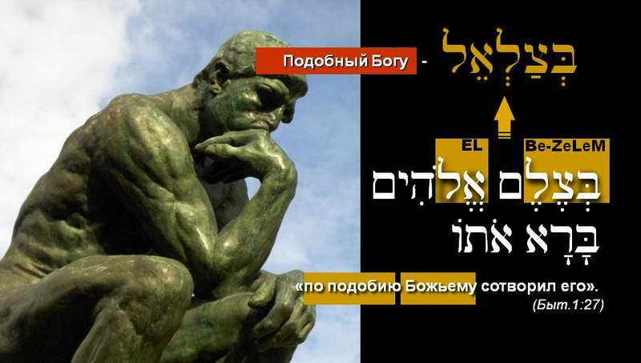
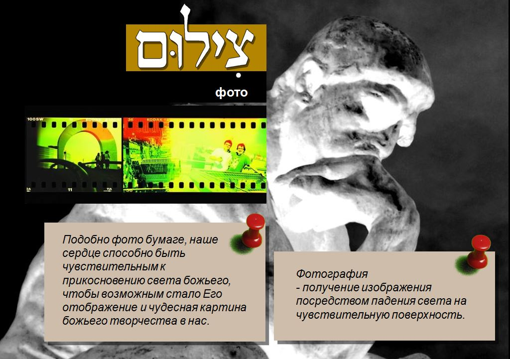

Арт-мидраш · Библия и художник
БЕЦАЛЕЛЬ / Веселеил /. Под покровом Всевышнего

Бецалеле (синод.: Веселеил) - мастер, три с половиной тысячи лет назад призванный Богом для сооружения скинии Завета (переносного святилища). Бог положил условием для Израиля устроение скинии искусной работы, с тем чтобы Он мог обитать посреди Своего народа.
БЕЦАЛЕЛЬ - СЫН СВЕТА. Призвание. (часть I) БЕЦАЛЕЛЬ. Под покровом Всевышнего. (часть II) БЕЦАЛЕЛЬ - СЫН СВЕТА. Свет Господень (часть III) БЕЦАЛЕЛЬ - СЫН СВЕТА. Дед ХУР (часть IV) БЕЦАЛЕЛЬ - СЫН СВЕТА. Славящий Бога (часть V)
фильм: Эфраима Калиша
музыка: Даниэля Круглова
студия "Тора-Арт".
Тора особо подчеркивает то обстоятельство, что Всевышний призвал конкретного человека из среды Израиля, называя его при этом по имени (Исх.31:2). В этом писании есть место для двоякого понимания смыла сказанного:
1. Из множества израильтян в пустыне Бог избирает того, чье имя Бецалель, сын Ури и поручает ему работу высочайшего уровня по устроению святилища для Творца неба и земли.
2. Другое прочтение того же текста говорит: Бог от начала дал имя человеку, т.е. Он Сам назвал его еще до его рождения этим именем Бецалель (в тени Бога), как сказал впоследствии царь Давид о том, что Бог записывает в Свою книгу жизни все дни человека, когда еще не одного из них еще не было. Это от начала способ, коим Бог творил все, что мы видим. Называя по имени еще не существующее, Он дает начало его бытию: "Он сказал и сделалось" (Пс.32:9).
Дать имя человеку - в древности означало - явить над ним свою власть. Но есть нечто особое, когда Сам Бог называет человека. Такое имя есть призвание и закон жизни человека определяющий всю его жизнь. Бог снаряжает такого человека всем необходимым (способностями, талантом) для исполнения Его великого замысла. Разумеется, от человека зависит согласиться, или отвергнуть определенное Творцом призвание.
***
בצלאל БЕЦАЛЕЛЬ. В тени Бога.
Бецалель בצלאל в переводе с древнееврейского — «в тени Бога»: צל — тень.

Вот несколько слов этого корня, которые помогут нам яснее, объемнее представить суть имени художника:
צֵל [цель] — тень, צלם [целем] — образ, צילום [цилюм] — копия.

Итак, тень. Свойства тени говорят нам многое о характере и сути художника. Тень живет только при свете, во тьме тени быть не может. Тень всегда существует по строгим законам — законам света, представляя собой некий образ, проекцию предмета, но при этом никогда не может воспроизвести оригинал в точности. Тень лишь передает его силуэт, некоторое представление о предмете.

И еще одно ее свойство: тень имеет жизнь только тогда, когда существует предмет. Она весьма зависима от него и «предана» ему. Как тень следует за хозяином своим, так человек следует за своим Создателем.

Но еврейское слово צֵל [цель] означает не только тень как проекцию предмета, не только укрытие от палящего солнца и прохладу, столь желанную в Израиле, но также и покровительство. Так это звучит у псалмопевца: «Храни меня, как зеницу ока; в тени крыл Твоих укрой меня...» (Пс.16:8).

Второе слово корня צלם [целем], в переводе с иврита — образ, подобие. Человек был сотворен, как написано: בְּצֶלֶם אֱלֹהִים בָּרָא אֹתוֹ «... по образу Божию сотворил его...» (Быт. 1:27).

Выделенные в этой фразе (на иврите) слова можем обнаружить и в имени Бецалель. Причем, следуют они в том же самом порядке. Этот прием характерен для древнееврейского языка. Существует много имен, состоящих из нескольких слов или их частей. Вот вам пример: Авраам — отец множества народов. Мелхиседек — царь правды. Исраэль — да владычествует Бог. Это дает нам еще одну возможность прочитать имя Бецалель как словосочетание: Бецелем + эль, то есть подобный Богу. Итак, мы говорим о подобии человека Богу. Что может быть значительнее для творческой личности, чем осознать этот факт? Я создан по Его образу и подобию.
Одна из важнейших сторон такого подобия — способность и потребность человека творить. Подобие, призванное отражать славу Божью. Бог называет творческого человека подобным Себе. Более того, Он наполняет такого человека Своим вдохновением.

Еще одно слово того же корня - צילום [цилюм] — это современное слово, в переводе с иврита «фото, отпечаток». Толковый словарь дает следующее значение слова «фотография» - получение изображения посредством падения света на чувствительную поверхность. Это свойство фотографии — яркая аллегория для нас. Подобно фотобумаге, сердце человека способно быть чувствительным к прикосновению света Божьего, что позволяет Создателю творить через вас.
Итак, три этих слова с общим корнем — צֵל [цель] (тень), צלם [целем] (образ), צילום [цилум] (копия) - позволяют нам вникнуть в послание человеку искусства, которое Бог открывает в имени Бецалель, первого художника-израильтянина.
Итак, вот что заключено в имени Бецалель и важно для нас.
* Творчество должно быть определено законом Предвечного, а художнику важно хранить верность своему Создателю и следовать за Ним.
* Всевышний дал человеку великий дар — наполняясь Божественным вдохновением, в своем творчестве быть подобным Творцу, являть Его великую силу и славу.
* В этом имени призвание человека творчества — запечатлевать и отображать величие Творца вселенной.
БЕЦАЛЕЛЬ - СЫН СВЕТА. Призвание. (часть I) БЕЦАЛЕЛЬ - СЫН СВЕТА. Под покровом Всевышнего. (часть II) БЕЦАЛЕЛЬ - СЫН СВЕТА. Свет Господень (часть III) БЕЦАЛЕЛЬ - СЫН СВЕТА. Дед ХУР (часть IV) БЕЦАЛЕЛЬ - СЫН СВЕТА. Славящий Бога (часть V)
Эта публикация статьи исправлена и дополнена автором.
(впервые статья Эфраима Калиша была опубликована на сайте skiniyadavidova.org)
автор: Эфраим Калиш /TORAART/
ЕСЛИ ЭТОТ МАТЕРИАЛ БЫЛ ВАМ ПОЛЕЗЕН, ПОЖАЛУЙСТА, ПОДЕЛИТЕСЬ ИМ С ДРУЗЬЯМИ